الباب 04: إشارات الإلزام وقواعد الدوارات والمسارات
الدليل الهندسي الشامل لإشارات التكليف الإلزامية الدائرية الزرقاء: الاتجاهات الإجبارية الفورية والإشعار المسبق بها، المرور الإلزامي حول العوائق والجزر المرورية، قواعد أسبقية الدوارات (Rotatoria) بحالتيها، والمسارات الحصرية (حظر السيكلوموتوري في مسار الدراجات)، وحد السرعة الأدنى وسلاسل الثلوج والتوقف الإلزامي عند الجمارك والشرطة.
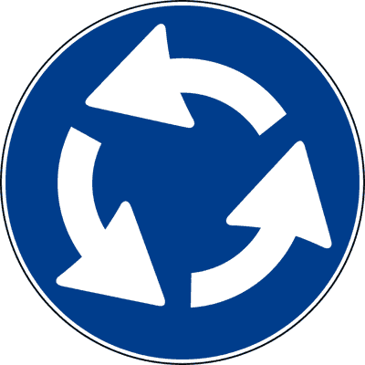
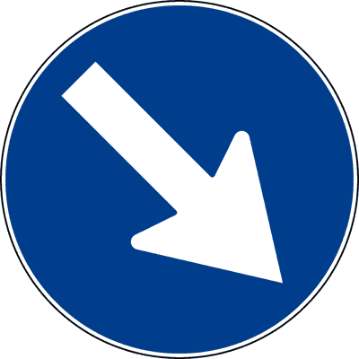
المقارنة البصرية الحاسمة: المسارات المحجوزة للمشاة والدراجات
الفروق الدقيقة التي يركز عليها واضع الامتحان الوزاري للتمييز بين المسار الحصري والمشترك
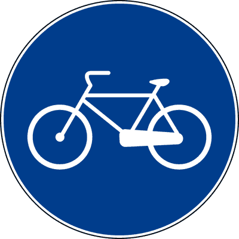
ممر دراجات حصري
مخصص حصراً للدراجات الهوائية.
🚫 ممنوع منعاً باتاً: السيكلوموتوري (Ciclomotori)، والدراجات النارية، والمشاة.
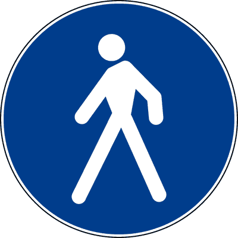
مسار مشاة حصري
مخصص حصراً للمشاة.
🚫 ممنوع: سير أي مركبة مهما كان نوعها، بما في ذلك الدراجات الهوائية.
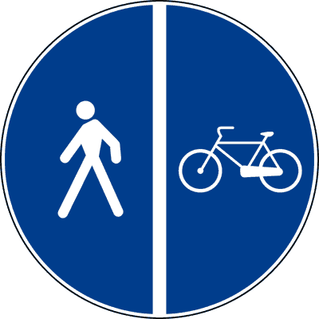
ممر دراجات ملاصق للرصيف
مساران متجاوران مفصولان بخط طولي واضح: قسم مخصص للدراجات وقسم لرصيف المشاة.
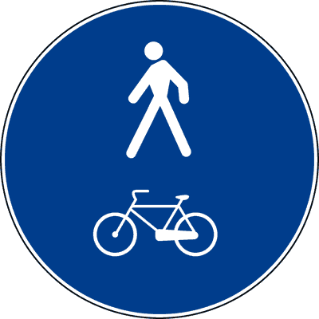
مسار مشترك للمشاة والدراجات
مسار واحد موحد غير مفصول بخط، يتشارك فيه المشاة والدراجات الهوائية معاً بحذر متبادل.
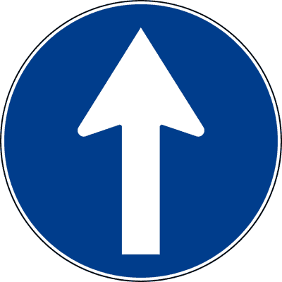
اتجاه إجباري للأمام مباشرة
Direzione obbligatoria diritto (Figura 93)يوضع قبل التقاطع مباشرة ويلزم السائق بمتابعة السير للأمام فقط. يمنع منعاً باتاً الانعطاف يميناً أو يساراً أو الدوران للخلف.
- • يلزم السائق بالسير في الاتجاه المستقيم الوحيد المشار إليه بالسهم.
- • يوضع في التقاطع مباشرة قبل نقطة التفرع.
- • يمنع الانعطاف نحو اليمين أو نحو اليسار والدوران العكسي.
- • يشير لطريق باتجاه واحد (خطأ، هذا رمز الاتجاه الإجباري الدائري وليس لوحة Senso Unico المربعة).
- • يسمح بالانعطاف لليسار بعد إعطاء الأسبقية (خطأ).
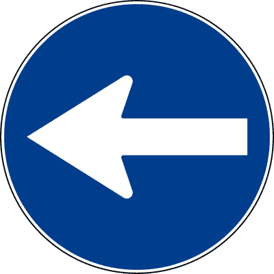
اتجاه إجباري لليسار
Direzione obbligatoria a sinistra (Figura 94)يوضع قبل التقاطع ويلزم السائق بالانعطاف الإجباري جهة اليسار حصراً. يحظر المتابعة للأمام أو الانعطاف يميناً.
- • يفرض الانعطاف يساراً عند التقاطع الذي تقع فيه الإشارة مباشرة.
- • يحظر الاستمرار في السير للأمام أو الانعطاف نحو اليمين.
- • يوضع لتنبيه السائق بمنعطف خطر جهة اليسار (خطأ، هذا إشارة خطر مثلثة).
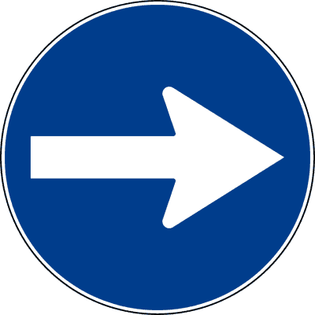
اتجاه إجباري لليمين
Direzione obbligatoria a destra (Figura 95)يوضع قبل التقاطع مباشرة ويلزم بالانعطاف نحو اليمين فقط، ويحظر السير للأمام أو الانعطاف لليسار.
- • يفرض الانعطاف جهة اليمين عند التقاطع القادم.
- • يمنع المتابعة للأمام أو الانعطاف لليسار.
- • يفرض المرور من يمين العائق (خطأ، هذا Passaggio obbligatorio بسهم مائل لأسفل).
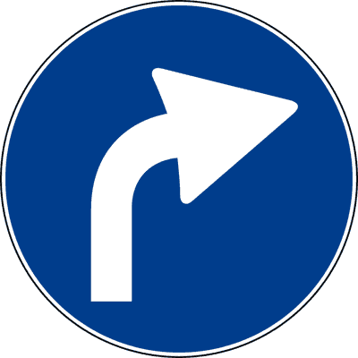
إشعار مسبق باتجاه إجباري لليمين
Preavviso di direzione obbligatoria a destra (Figura 96)سهم مائل لليمين؛ يوضع قبل التقاطع بمسافة مناسبة لإشعار السائق بضرورة التموضع في المسار الأيمن قبل الانعطاف الإلزامي.
- • يسبق التقاطع بمسافة لإتاحة الوقت لاختيار المسار المناسب.
- • يليه عند التقاطع إشارة الاتجاه الإجباري لليمين (Fig. 95).
- • يوضع عند نقطة الانعطاف مباشرة (خطأ، هو إشعار مسبق Preavviso).
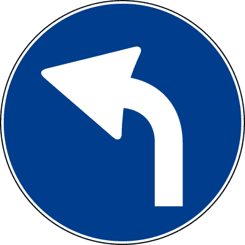
إشعار مسبق باتجاه إجباري لليسار
Preavviso di direzione obbligatoria a sinistra (Figura 97)سهم مائل لليسار؛ ينبه السائق قبل التقاطع بوجوب الانعطاف لليسار عند الوصول للتقاطع التالي.
- • ينبه مسبقاً بإلزامية الانعطاف نحو اليسار في التقاطع القادم.
- • يمكن أن يقترن بلوحة إضافية تحدد المسافة المتبقية حتى التقاطع.
- • يلزم بالمرور من يسار الجزيرة المرورية (خطأ، هذا Passaggio a sinistra).
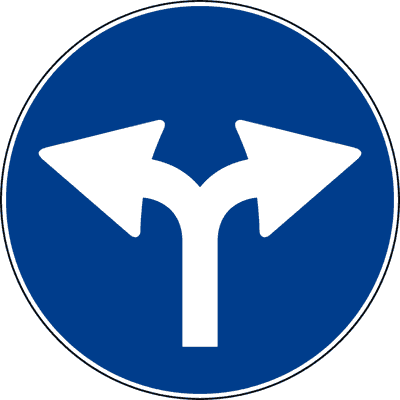
اتجاهان مسموحان: يمين أو يسار
Direzioni consentite destra e sinistra (Figura 98)سهمان أفقيان متعاكسان؛ يوضع قبل التقاطع الذي لا يمكن فيه المتابعة للأمام (تقاطع على شكل حرف T)، ويخير السائق بين الانعطاف يميناً أو يساراً.
- • يسمح بالانعطاف إما نحو اليمين أو نحو اليسار.
- • يمنع منعاً باتاً المتابعة في السير للأمام مباشرة.
- • يسمح بالاستمرار في السير للأمام (خطأ، السير للأمام محظور).
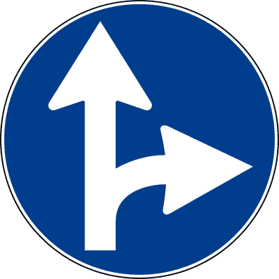
اتجاهان مسموحان: للأمام أو لليمين
Direzioni consentite diritto e destra (Figura 99)سهم للأمام وسهم لليمين؛ يسمح بالسير للأمام أو الانعطاف لليمين، ويحظر الانعطاف جهة اليسار أو الدوران للخلف.
- • يسمح فقط بالاستمرار للأمام أو الانعطاف يميناً.
- • يمنع الانعطاف نحو اليسار والدوران العكسي للخلف.
- • يسمح بالانعطاف لليسار بعد التأكد من خلو الطريق (خطأ).
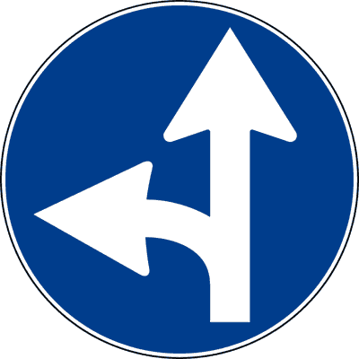
اتجاهان مسموحان: للأمام أو لليسار
Direzioni consentite diritto e sinistra (Figura 100)سهم للأمام وسهم لليسار؛ يسمح بالمتابعة للأمام أو الانعطاف يساراً، ويحظر الانعطاف جهة اليمين.
- • يتيح خيارين فقط: السير للأمام أو الانعطاف لليسار.
- • يحظر الانعطاف نحو اليمين عند التقاطع.
- • يسمح بالانعطاف يميناً (خطأ).
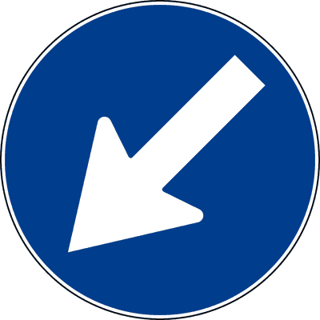
مرور إجباري من اليسار
Passaggio obbligatorio a sinistra (Figura 101)سهم أبيض مائل لأسفل نحو اليسار؛ يوضع أمام الجزر المرورية أو العوائق ويلزم بالمرور من جانبها الأيسر.
- • يلزم السائق بعبور العائق أو الجزيرة المرورية من جانبها الأيسر.
- • يوضع غالباً عند مواقع الورش والحواجز في نهر الطريق.
- • يفرض الانعطاف لليسار عند التقاطع (خطأ، هو مرور حول عائق وليس انعطافاً).
مرور إجباري من اليمين
Passaggio obbligatorio a destra (Figura 102)سهم أبيض مائل لأسفل جهة اليمين؛ يوضع على الجزر المرورية أو أعمدة الإنارة أو العوائق ويلزم بتجاوزها من اليمين.
- • يلزم بالمرور من يمين العائق أو الجزيرة الفاصلة لحركة المرور.
- • يمكن أن يوضع على سيارات الورش والصيانة المتوقفة على الطريق.
- • يلزم بالانعطاف في أول شارع لليمين (خطأ).
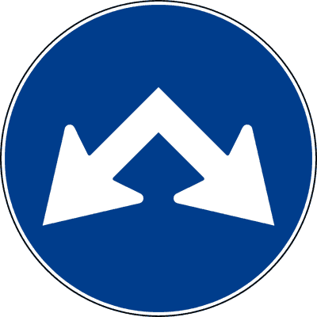
مرور مسموح من اليمين أو اليسار
Passaggi consentiti a destra o a sinistra (Figura 103)سهمان مائلان لأسفل للخارج؛ يوضع على العوائق الواقعة في طريق ذي اتجاه واحد أو حارة مزدوجة، ويسمح بالمرور من كلا الجانبين.
- • يسمح للسائق بتجاوز العائق إما من جهة اليمين أو من جهة اليسار.
- • يوضع عادة عند بداية جزيرة مرورية تفصل حارتين تسيران في نفس الاتجاه.
- • يوضع في طريق ذي اتجاهين متعاكسين (خطأ، يوضع حيث المساران في نفس الاتجاه).
حركة سير دائرية (دوار)
Circolazione rotatoria (Figura 104)ثلاثة أسهم بيضاء دائرية بعكس اتجاه عقارب الساعة. تلزم السائقين بالدوران وفق اتجاه الأسهم حول الميدان أو الجزيرة المركزية.
- • يفرض حركة دوران إجبارية بعكس اتجاه عقارب الساعة حول الجزيرة المركزية.
- • إذا كان بمفرده دون لوحات إضافية، تطبق الأسبقية لليمين (للمركبات الداخلة).
- • إذا اقترن بـ Dare precedenza، تكون الأسبقية للمركبات التي بداخل حلقة الدوار.
- • يمنح الأسبقية دائماً لمن هم داخل الدوار حتى بدون إشارة Dare precedenza (خطأ).
- • يسمح بالدوران مع اتجاه عقارب الساعة (خطأ مطلق).
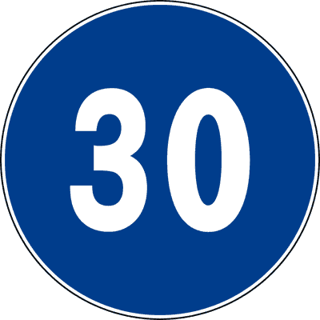
حد السرعة الأدنى الإجباري
Limite minimo di velocità (Figura 105)دائرة زرقاء برقم أبيض (مثلاً 30 كم/س)؛ تلزم بالسير بسرعة لا تقل عن الرقم المحدد، لمنع تعطيل حركة المرور.
- • يفرض على السائق القيادة بسرعة تساوي أو تزيد عن الحد المكتوب.
- • يحظر سير المركبات التي لا تستطيع بلوغ السرعة المحددة في هذا المسار.
- • يشير للسرعة القصوى المسموح بها (خطأ، الحد الأقصى دائرة بيضاء بإطار أحمر).
- • يقترح سرعة منصوحاً بها اختيارية (خطأ، هو إلزام قطعي وليس نصيحة).
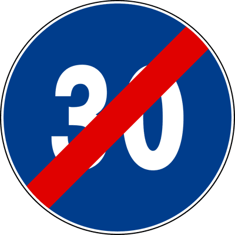
نهاية حد السرعة الأدنى
Fine del limite minimo di velocità (Figura 106)نفس الدائرة الزرقاء مشطوبة بشريط أحمر مائل. تعلن انتهاء إلزامية الحد الأدنى للسرعة والعودة للقواعد العامة.
- • ينهي الالتزام بالسير بسرعة لا تقل عن الحد المحدد سابقاً.
- • يسمح للمركبات البطيئة بالعودة للسير في الطريق.
- • يفرض التوقف أو تخفيض السرعة إجبارياً فوراً (خطأ).
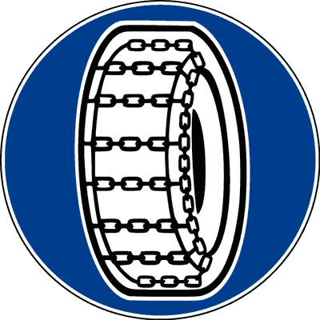
سلاسل الثلوج الإجبارية
Catene per neve obbligatorie (Figura 107)عجلة بسلاسل ثلج داخل دائرة زرقاء. تلزم بتركيب سلاسل الثلج أو استخدام إطارات شتوية معتمدة عند وجود ثلوج أو جليد على الطريق.
- • يلزم بالسير بسلاسل ثلج مركبة على عجلات الدفع، أو استخدام إطارات شتوية (Pneumatici invernali).
- • يوضع في الطرق الجبلية والمعابر المعرضة للثلوج والجليد.
- • يلزم بتركيب السلاسل حتى لو كان الطريق جافاً تماماً وخالياً من الثلج (خطأ، الإطارات الشتوية تكفي).
مسار مخصص للمشاة
Percorso pedonale (Figura 108)مخصص حصراً لحركة المشاة، ويحظر سير كافة أنواع المركبات الآلية وغير الآلية (بما فيها الدراجات الهوائية).
- • مسار محجوز ومخصص حصراً للمشاة.
- • يمنع سير أي مركبة بما في ذلك الدراجات والسيكلوموتوري.
- • يسمح بمرور الدراجات الهوائية (خطأ، المسار للمشاة فقط).
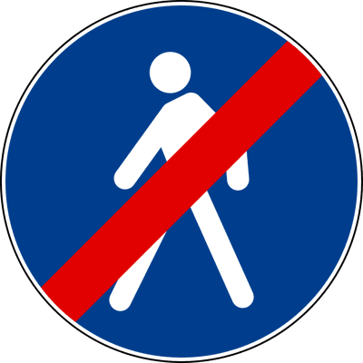
نهاية مسار المشاة
Fine del percorso pedonale (Figura 109)يعلن انتهاء المسار الحصري للمشاة وإمكانية عودة المركبات أو انتهاء منطقة الحماية.
- • يشير لنهاية المسار المخصص حصراً للمشاة.
- • يمنع المشاة من السير (خطأ، ينهي الحصرية فقط).
ممر الدراجات الهوائية الحصري
Pista ciclabile (Figura 110)مخصص حصراً للدراجات الهوائية (Velocipedi). يُمنع منعاً باتاً دخول الدراجات البخارية الصغيرة (Ciclomotori) والدراجات النارية والسيارات والمشاة.
- • مخصص حصراً لسير الدراجات الهوائية فقط.
- • يحظر دخول وسير السيكلوموتوري (Ciclomotori) والموتوسيكلات.
- • يلزم راكبي الدراجات باستخدامه وعدم السير في نهر الطريق العادي.
- • يسمح بمرور الدراجات البخارية الصغيرة Ciclomotori (خطأ شنيع FALSO).
- • مخصص للمشاة والدراجات معاً (خطأ، هذا رمز الدراجة فقط).
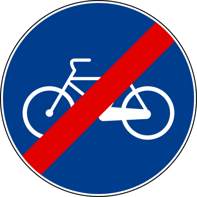
نهاية ممر الدراجات الهوائية
Fine della pista ciclabile (Figura 111)رمز الدراجة مشطوب بخط أحمر مائل؛ يعلن نهاية ممر الدراجات وعودة الدراجات للاندماج في نهر الطريق العام بحذر.
- • يعلن نهاية المسار الحصري المخصص للدراجات الهوائية.
- • يدعو سائقي الدراجات للحذر عند الاندماج مجدداً في حركة السير العامة.
- • يحظر ركوب الدراجات تماماً (خطأ، ينهي الممر المخصص فقط).
ممر دراجات ملاصق وموازٍ لرصيف المشاة
Pista ciclabile contigua al marciapiede (Figura 112)دائرة زرقاء مقسومة بخط رأسي أبيض: رمز الدراجة في جانب ورمز المشاة في جانب آخر. مساران متلاصقان مفصولان بخط واضح.
- • مساران متجاوران يسيران جنباً إلى جنب ومفصولان بعلامات أرضية.
- • كل فئة ملزمة بالسير في مسارها الخاص وعدم التعدي على مسار الفئة الأخرى.
- • مسار مختلط بدون أي فصل (خطأ، الخط الأبيض يفصل بينهما).
مسار مشترك للمشاة والدراجات الهوائية
Percorso pedonale e ciclabile (Figura 113)رمز المشاة والدراجة معاً في نفس الدائرة دون خط فاصل بينهما. مسار واحد مشترك يتشاركه المشاة والدراجات معاً.
- • مسار موحد ومختلط مخصص للمشاة وراكبي الدراجات الهوائية معاً.
- • لا يوجد خط أرضي فاصل بين المشاة والدراجات.
- • يسمح بدخول السيكلوموتوري أو الدراجات النارية (خطأ قطعي).
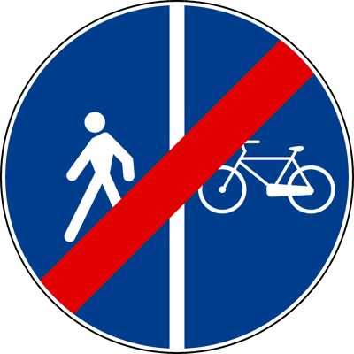
نهاية ممر الدراجات الملاصق للرصيف
Fine della pista ciclabile contigua al marciapiede (Figura 114)يعلن انتهاء الممرين المتلاصقين المفصولين للدراجات والمشاة.
- • يشير لنهاية المسار المزدوج المتجاور للدراجات والرصيف.
- • يمنع حركة السير تماماً (خطأ).
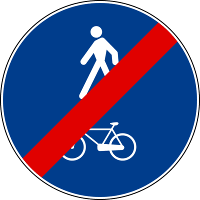
نهاية المسار المشترك للمشاة والدراجات
Fine del percorso pedonale e ciclabile (Figura 115)يشير لانتهاء المسار المشترك المخصص لحركة المشاة والدراجات معاً.
- • يعلن نهاية المسار المختلط المفتوح للمشاة والدراجات.
- • يلزم المشاة بالتوقف عن السير (خطأ).
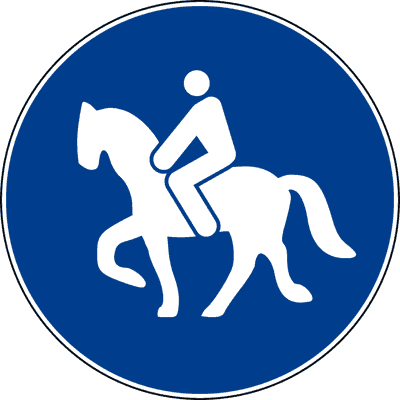
مسار مخصص لحيوانات الركوب والحمل
Percorso per animali da sella o da soma (Figura 116)مخصص حصراً لسير الفرسان وخيول الركوب وحيوانات الحمل، ويحظر سير المركبات الآلية بجميع أنواعها.
- • مخصص للفرسان والخيول وحيوانات الركوب.
- • يمنع سير جميع أنواع المركبات الآلية.
- • ينبه بمرور حيوانات برية طليقة (خطأ، هذا إشارة خطر مثلثة Selvatici).
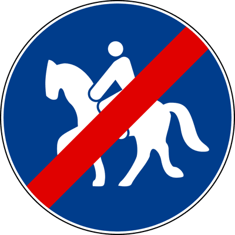
نهاية مسار حيوانات الركوب
Fine del percorso per animali da sella (Figura 117)يعلن انتهاء المسار الحصري المخصص لخيول وحيوانات الركوب.
- • يشير لنهاية المسار المخصص للخيول وحيوانات الركوب.
- • يمنع دخول الخيول للمزارع المجاورة (خطأ).
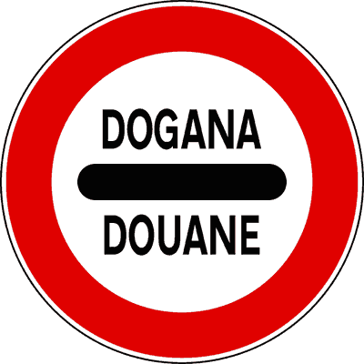
توقف إلزامي - الجمارك
Alt - Dogana (Figura 118)دائرة بيضاء بإطار أحمر وشريط أسود وكلمة DOGANA / DOUANE. تفرض التوقف التام الإجباري عند النقطة الجمركية الحدودية للتفتيش.
- • يلزم السائقين بالتوقف التام الإجباري عند معبر الجمارك الحدودي.
- • لا يسمح بمتابعة السير إلا بعد الحصول على إذن السلطات الجمركية.
- • يسمح بالمرور ببطء دون توقف تام (خطأ قاطع FALSO - التوقف إجباري).
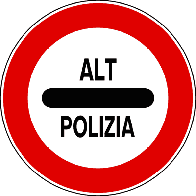
توقف إلزامي - نقطة تفتيش الشرطة
Alt - Polizia (Figura 119)تفرض التوقف التام الإجباري عند حاجز ونقطة التفتيش التابعة للشرطة وقوات الأمن.
- • تفرض التوقف التام الإجباري عند حاجز الشرطة.
- • توضع على مسافة مناسبة قبل نقطة التفتيش الفعلية.
- • تنبه بوجود قسم شرطة فقط دون إلزام بالتوقف (خطأ).
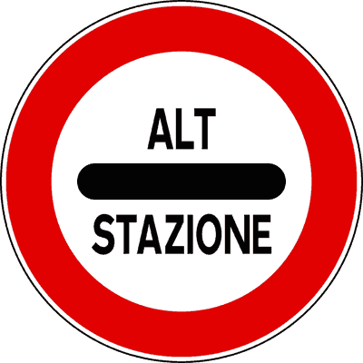
توقف إلزامي - بوابات رسوم الأوتوستراد
Alt - Stazione (Figura 120)تفرض التوقف الإجباري عند بوابات ومحطات تحصيل رسوم المرور على الأوتوستراد (Pedaggio autostradale).
- • يلزم بالتوقف التام عند محطة تحصيل رسوم الأوتوستراد لدفع الرسوم أو سحب التذكرة.
- • يستثنى من التوقف التام المشتركون في نظام الدفع الإلكتروني عن بُعد (Telepass) في الحارات المخصصة لهم.
- • يشير لمحطة قطار عادية (خطأ، هي محطة رسوم الأوتوستراد).
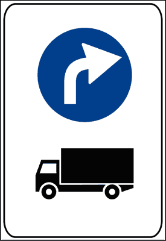
انعطاف لليسار للمركبات الثقيلة والشاحنات
Svolta a sinistra per veicoli pesanti (Figura 150)ينظم مسار الانعطاف لليسار للشاحنات والمركبات الثقيلة التي يتعذر عليها الانعطاف المباشر لضيق التقاطع، ويوجهها لمسار مخصص.
- • يوجه المركبات الثقيلة والشاحنات لاتباع مسار محدد للانعطاف لليسار.
- • يمنع المركبات الثقيلة من الانعطاف المباشر تجنباً لعرقلة التقاطع.
- • ينطبق على جميع السيارات الخفيفة والدراجات (خطأ، مخصص للمركبات الثقيلة).
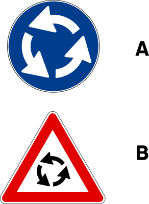
لوحة تكميلية للدوار وحركة السير
Pannello integrativo rotatoria (Figura 971)توضع كلوحة مكملة أسفل إشارات الخطر أو الإلزام لتأكيد الاقتراب من ميدان دوار وتنظيم اتجاه الدخول.
- • تؤكد طبيعة التقاطع الدائري واتجاه الدوران الإلزامي.
- • تتكامل مع إشارات الإشعار المسبق والتحذير قبل الدوارات الكبرى.
- • تلغي إشارة الدوار الرئيسية (خطأ، هي لوحة مكملة لها).
أمر قانوني صادر عن إشارات المرور يلزم السائق بسلوك محدد لا خيار له فيه ولا يجوز مخالفته.
الفئة القانونية الكبرى التي تشمل: إشارات الأسبقية (Precedenza)، إشارات المنع (Divieto)، وإشارات الإلزام (Obbligo).
نظام تنظيم السير في الميادين حول جزيرة مركزية بعكس اتجاه عقارب الساعة.
مسار مخصص حصراً للدراجات الهوائية (Velocipedi)، ويحظر تماماً سير الدراجات البخارية الصغيرة (Ciclomotori) والمشاة فيه.
مسار موحد غير مفصول بخط أرضي، يتشاركه المشاة والدراجات الهوائية معاً بحذر متبادل.
السرعة الدنيا الإلزامية التي يحظر القيادة بأقل منها في مسار أو طريق محدد لمنع عرقلة التدفق السريع.
وسائل التماسك الإلزامية على الطرق المغطاة بالثلوج أو الجليد؛ الإطارات الشتوية تعادل السلاسل قانونياً وتغني عن تركيبها.
مناورة تغيير اتجاه المركبة يميناً أو يساراً لدخول شارع آخر عند التقاطع.
حارة في نهر الطريق مخصصة لغرض محدد كالانعطاف أو التسارع أو التباطؤ أو لمركبات معينة.
إلزام السائق بعبور عائق أو جزيرة مرورية من جانب محدد (يمين أو يسار) بالسهم المائل لأسفل.
منطقة مخصصة للمشاة يسمح فيها بالدراجات ومركبات الطوارئ والمعاقين وفق شروط وضوابط محددة.
الجهة الإدارية والقانونية المسؤولة عن الطريق (بلدية، محافظة، أنس، أوتوستراد) وصاحبة صلاحية وضع وتعديل إشارات المرور وحدود السرعة.